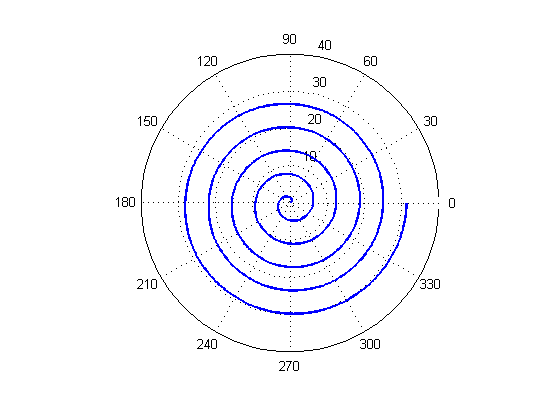

Capítulo 4. Gráficas
Ejemplos de gráficas en 2D y 3D
Contents
Mi primer gráfica
x=-2*pi:pi/180:2*pi; y=x.*cos(x); plot(x,y);
Añadiendo etiquetas, leyenda y título
x=-2*pi:pi/180:2*pi; y=x.*cos(x); plot(x,y); xlabel('Eje X'); ylabel('Eje Y'); title('Mi primer gráfica'); legend('f(x)=x*cos(x)');
Modificando el color de línea
x=-2*pi:pi/180:2*pi; y=x.*cos(x); plot(x,y,'r'); % Línea color roja xlabel('Eje X'); ylabel('Eje Y'); title('Mi primer gráfica'); legend('f(x)=x*cos(x)');
Modificando el grosor de línea
x=-2*pi:pi/180:2*pi; y=x.*cos(x); plot(x,y,'c','linewidth',3); % Grosor de línea 3 xlabel('Eje X'); ylabel('Eje Y'); title('Mi primer gráfica'); legend('f(x)=x*cos(x)');
Gráfica de ecuaciones paramétricas
t=linspace(0,2*pi,200); x=cos(t); y=sin(t); plot(x,y,'g'); title('Gráfica: ecuaciones paramétricas circunferencia'); axis('equal')
Gráfica coordenadas polares
theta=0:pi/180:10*pi;
r=theta;
h=polar(theta,r);
set(h,'linewidth',2);
 Gráficas múltiples en un mismo axes
clf; x=-2*pi:pi/180:2*pi; y1=x.*cos(x); y2=x.*sin(x); y3=0.5*x+2; hold on plot(x,y1,'r'); plot(x,y2,'g'); plot(x,y3,'b'); xlabel('Eje X'); ylabel('Eje Y'); title('Gráficas múltiples');
Anotaciones en gráficas
x=-2*pi:pi/180:2*pi; y1=x.*cos(x); plot(x,y1,'r'); xlabel('Eje X'); ylabel('Eje Y'); text(-2,4,'Anotación en gráfica')